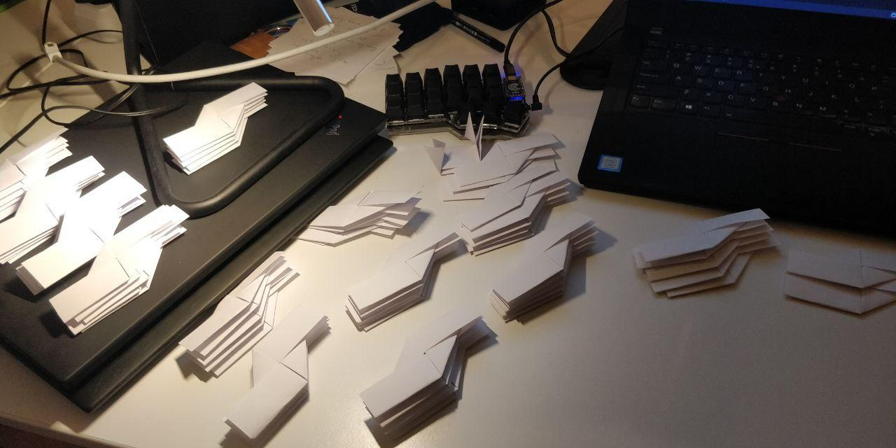
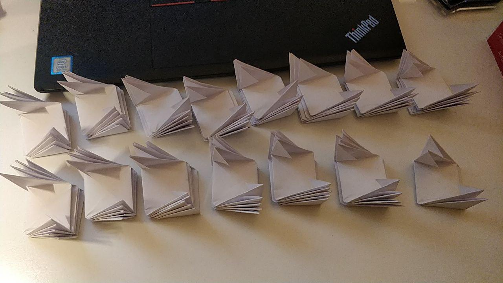

Menger Spongeusing blank business cardscards neededlevel 0level 1level 2
A Menger Sponge ist a fractal curve with a surface area approching \infty while the volume approches 0 for higher order Merger sponges.
This seemed interesting, so I built one out of paper.
Fold 72 sonobe:


Insert the individual sonobe together to form the merger sponge:
Next step: Build a level 2 menger sponge (left as an exercise for the reader).


 Next step: Build a level 2 menger sponge (left as an exercise for the reader).
Next step: Build a level 2 menger sponge (left as an exercise for the reader).